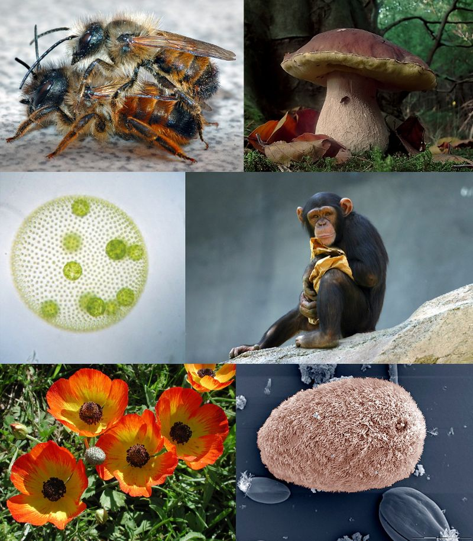

Текущая версия страницы пока не проверялась опытными участниками и может значительно отличаться от версии, проверенной 28 декабря 2018; проверки требуют 20 правок.
Эукариоты |
|  |
| Эукариоты и некоторые примеры их
разнообразия - по часовой стрелке от верхнего левого: Красный осмии , Белый гриб , шимпанзе , Isotricha интестиналис , лютик азиатский , и Volvox carteri |
Научная классификация |
| Домен: Эукариота |
Супергруппы и королевства |
|
Эукарио́ты (устар. эвкарио́ты; лат.Eukaryota от др.-греч. εὖ- ‘хорошо’ или ’полностью’[2] + κάρυον ‘ядро’), или я́дерные, — домен (надцарство) живых организмов, клетки которых содержат ядро. Все организмы, кроме прокариот (бактерий и архей), являются ядерными. Вирусы и вироиды также не являются ни прокариотами, ни эукариотами; более того, сам вопрос, считать ли их живыми организмами, является дискуссионным.
Содержание
Понятие эукариот было приписано французскому биологу Эдуару Чаттону (1883–1947). Термины прокариот и эукариот были более окончательно введены канадским микробиологом Роджером Станиером и голландско-американским микробиологом К. Б. ван Ньелом в 1962 году. В своей работе 1937 года Titres et Travaux Scientifiques [9] Чаттон предложил два термина, назвав бактерии прокариотами и организмы с ядрами в своих клетках эукариот. Однако он упомянул об этом только в одном параграфе, и идея фактически игнорировалась, пока заявление Чаттона не было вновь открыто Стэнье и ван Нилом.
Существует много различных типов эукариотических клеток, хотя животные и растения являются наиболее знакомыми эукариотами и, таким образом, обеспечивают отличную отправную точку для понимания эукариотической структуры. Однако, у грибов и многих протистов есть существенные различия.